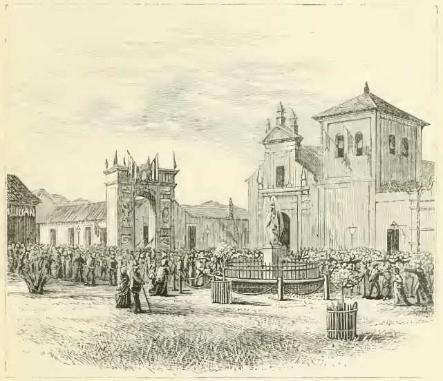
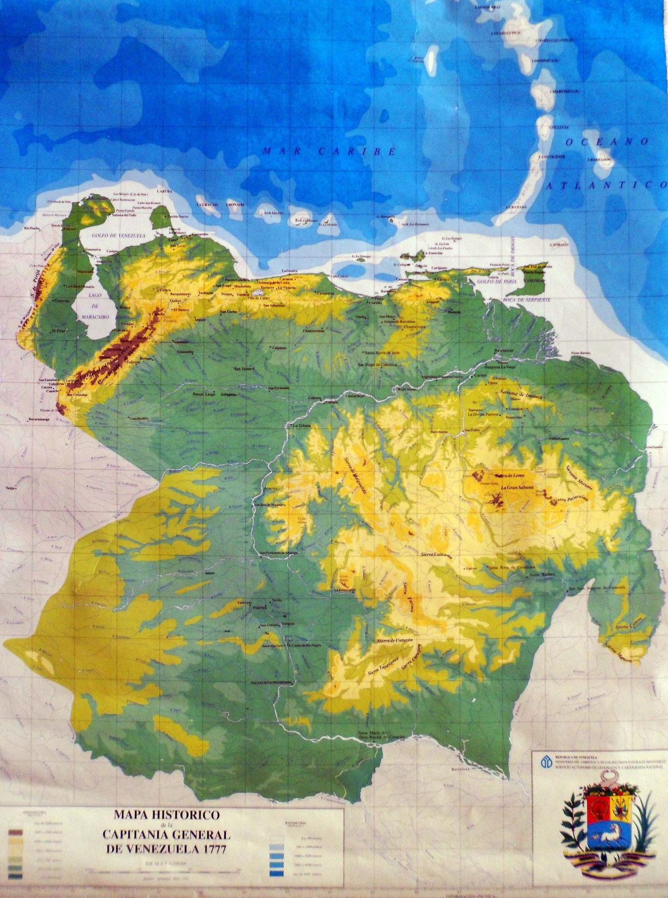
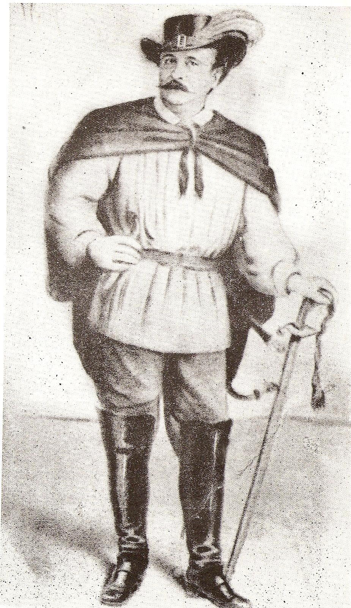
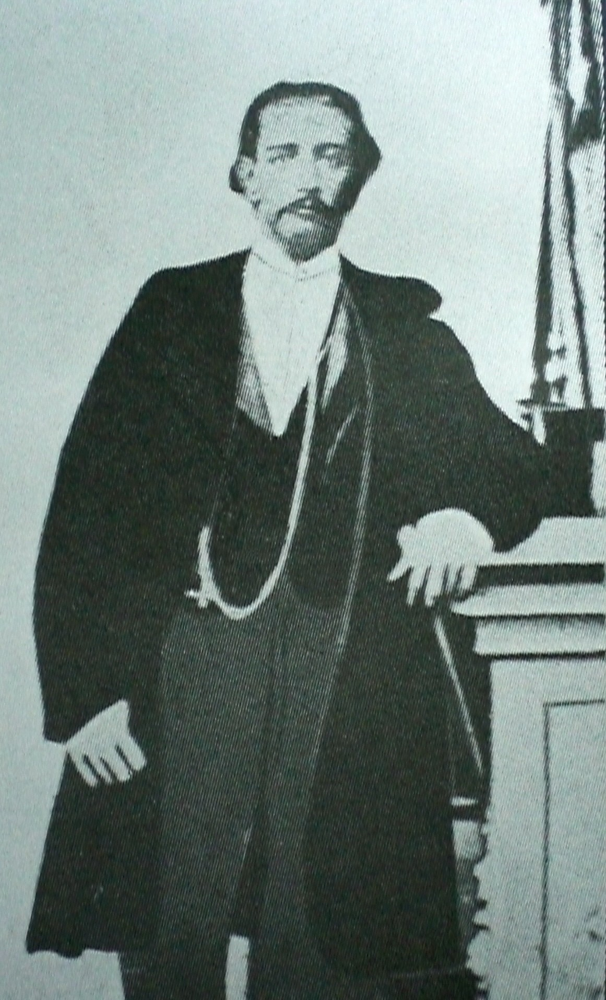
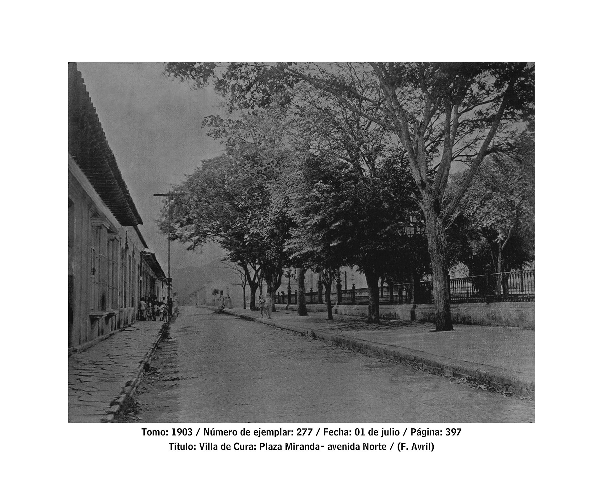
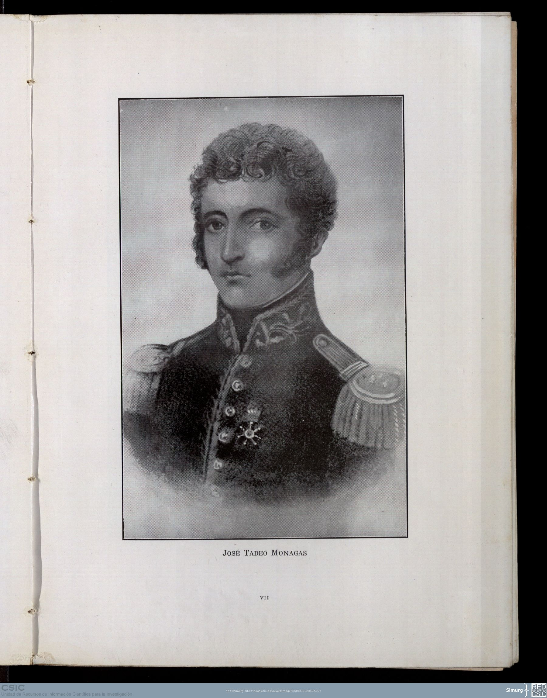
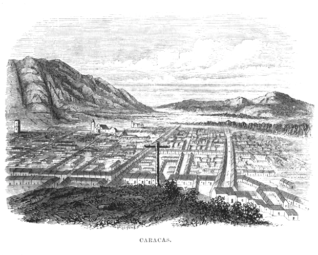
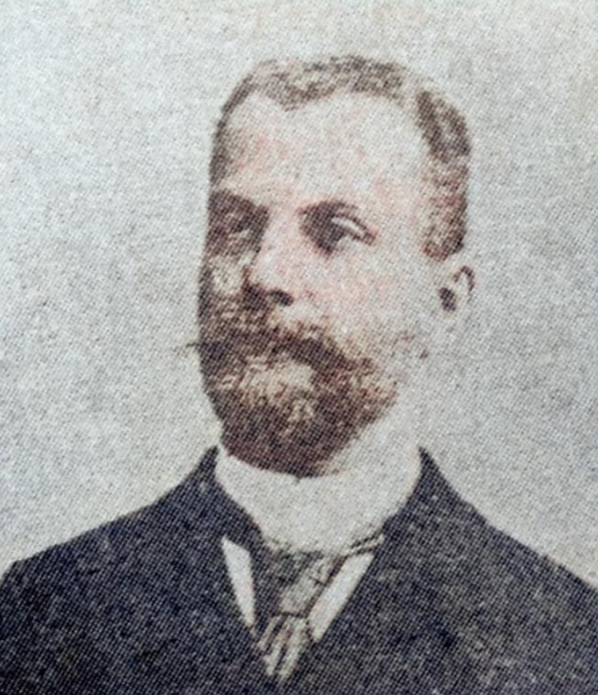
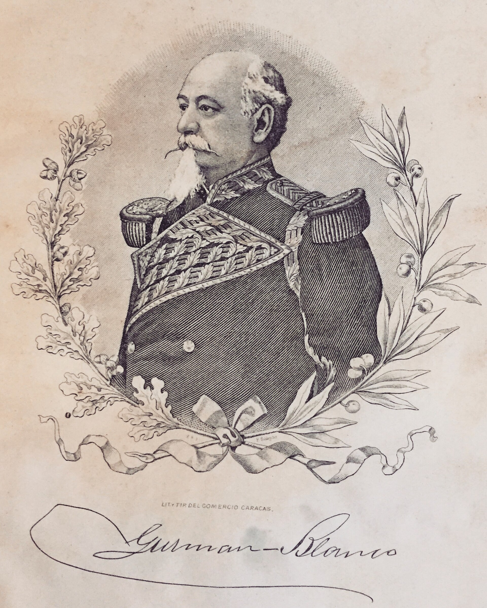

Historia Contemporánea de Venezuela
Venezuela, diciembre de 1867 – junio de 1868
Viernes 16 de octubre de 2026

01 · Contexto previo
1863
Fin de la Guerra Federal. Triunfan los federales y Juan Crisóstomo Falcón llega a la presidencia.
1864
La disidencia toma las armas. Aparecen los primeros alzamientos contra el gobierno.
1864–67
Tres años de preparación. La oposición acumula experiencia militar y política en casi todo el país.
No surgió de golpe en 1867: fue la culminación de un descontento acumulado.
La Revolución Azul · 2

02 · Qué fue
Diversos sectores políticos y regionales, más o menos coordinados, derrocaron a Juan Crisóstomo Falcón y a su sucesor interino, Manuel Ezequiel Bruzual.
Duración
Dic. 1867 – jun. 1868
Derrocados
Falcón y Bruzual
Distintivo
Bandera azul
El dato curioso
Liberales rebelándose contra un presidente liberal.
La Revolución Azul · 3
03 · Causas
De resentimientos personales pasaron a impugnar el mandato de Falcón y, al final, a “salvar la revolución”.
La represión agrupó a liberales descontentos, que se entendieron con los conservadores para formar la oposición.
Se dijo, sin fundamento aparente, que se preparaba una reforma para darle a Falcón otro mandato. Él siempre lo negó.
La Revolución Azul · 4

04 · El detonante
En Villa de Cura estalla el movimiento “Reconquistador”, con el general Miguel Antonio Rojas como jefe. Su bandera azul le dio nombre a la revolución.
Sept. 1867
Liberales y conservadores forman en Caracas un comité para derrocar al gobierno.
Mismo día
También se alza en Carabobo el general Gonzalo Cárdenas.
La Revolución Azul · 5

05 · Expansión del conflicto
Centro
Líder del alzamiento inicial. La lucha se intensifica en los valles del Tuy a comienzos de 1868.
Oriente
Con más de 80 años, apoya los alzamientos de Barcelona y Cumaná y publica un manifiesto el 25 de marzo.
Finales de abril: Falcón se retira y Manuel Ezequiel Bruzual queda como presidente encargado.
La Revolución Azul · 6


06 · Desenlace
11 de mayo
Tratado de Antímano. Rojas reconoce al gobierno y se une a él; los orientales lo rechazan.
26 de junio
Monagas entra a Caracas tras fracasar las negociaciones con Bruzual.
28 de junio
Gobierno provisional presidido por Guillermo Tell Villegas; Monagas, al mando del ejército.
Agosto 1868
Final de Bruzual. Huye a Puerto Cabello, es derrotado y muere en Curazao.
La Revolución Azul · 7

07 · Consecuencias
1868
José Tadeo Monagas llega a la presidencia y muere en el cargo ese mismo año.
1869
Asume su hijo, José Ruperto Monagas.
Abril
Antonio Guzmán Blanco lo derroca en la Revolución de Abril y comienza el Guzmanato.
Testimonio de la época
Un diplomático estadounidense en Caracas advirtió el temor de que los allegados orientales de Monagas acapararan los cargos más importantes, dejando de lado a otras regiones.
La Revolución Azul · 8
Referencias
Rodríguez Campos, M. “Revolución Azul”. Diccionario de Historia de Venezuela. Fundación Empresas Polar.
Mendoza, A. (2016). “La Revolución Azul: última escena política de José Tadeo Monagas (1867-1868)”. Tiempo y Espacio, 26(66), 23-44.
U.S. Department of State (1868). Despachos del ministro de EE.UU. en Caracas. Foreign Relations of the United States.
Wikipedia. “Gobierno de los Azules” y “Manuel Ezequiel Bruzual” (fuentes de apoyo).
La Revolución Azul · 9